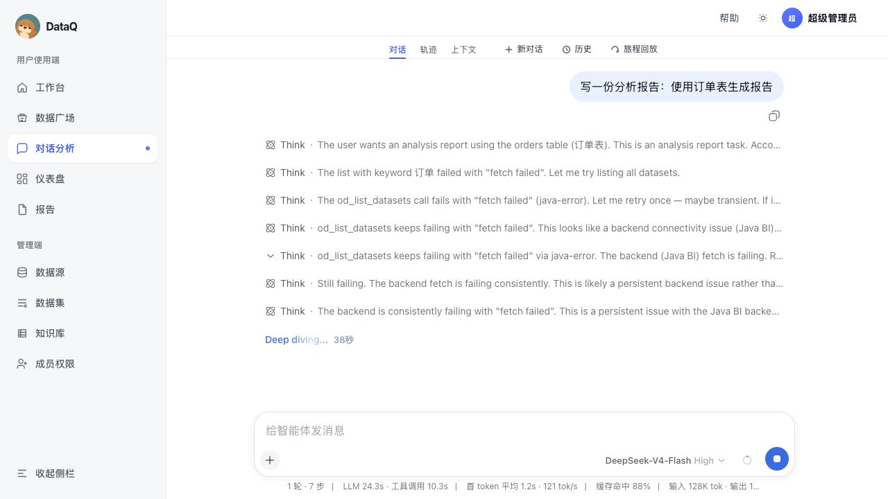
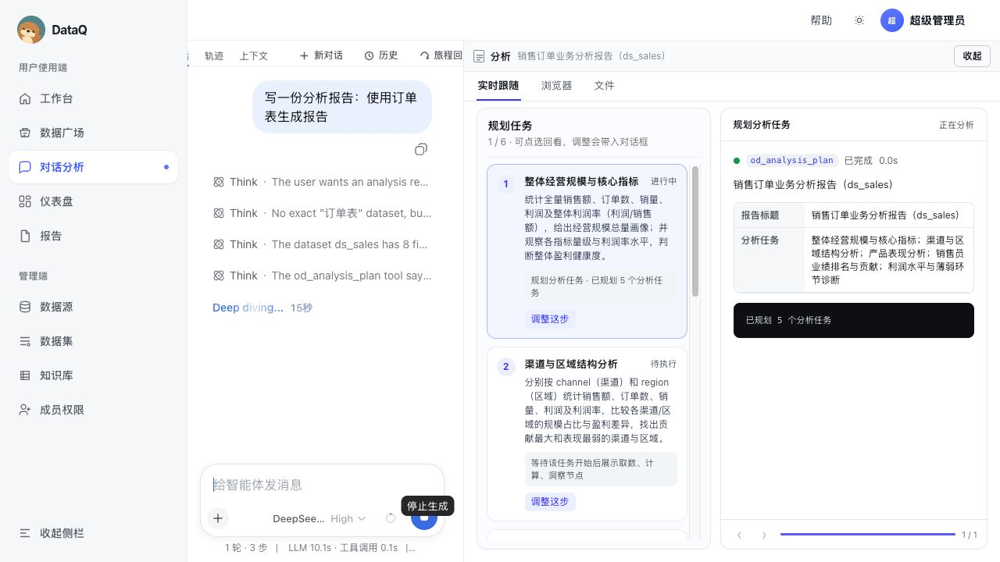
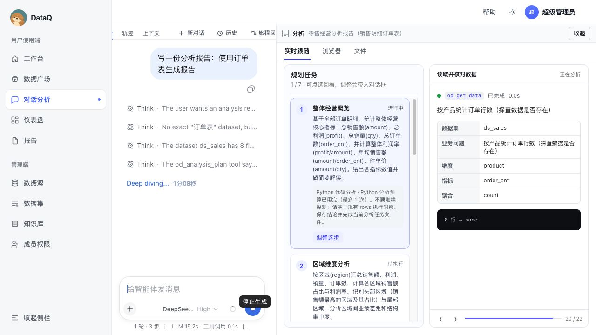

1. 结论摘要
当前报告生成能力已经具备“可见的 JoyAgent 式工作区骨架”：右侧能出现实时跟随、规划任务、节点详情、可调整入口。本轮继续修复了两个影响商用闭环的关键点：报告场景下“订单表”会优先命中
ds_012eb19e · t_pay_order，失败/空数据/等待诊断会提供可点击恢复动作。但真实订单长链路仍需在全栈数据环境中复验最终 HTML/MD 是否稳定生成。
| 能力 | 当前观察 | 商用判断 |
|---|---|---|
| 登录与产品入口 | 本地前端 + stub 后端可登录进入对话分析。 | 可验收骨架 |
| 右侧工作区 | 能展示“实时跟随 / 浏览器 / 文件”标签，以及规划任务列表与节点详情。 | 需要增强 |
| 规划可理解性 | 规划标题、任务说明、状态、调整按钮可见；但任务状态与真实执行状态仍有不一致。 | 接近可用 |
| 报告质量 | 渲染器和质量门禁已加强，但真实链路未产出最终 HTML/MD；stub 数据也不足以验证业务质量。 | 未达商用 |
| 失败体验 | 数据集发现失败、空数据、预算耗尽会暴露为 Think/技术提示，用户不容易知道下一步怎么办。 | 必须优化 |
2. 测试环境与方法
| 组件 | 状态 | 说明 |
|---|---|---|
| Frontend | 启动 | http://127.0.0.1:5173，使用 Vite dev server，代理 Java API 到 8080/8082，DSH 到 3090。 |
| Backend | 启动 | stub profile 分别验证 8080/8082，/actuator/health 返回 UP。 |
| DSH Harness | 启动 | http://127.0.0.1:3090，右侧进度桥 /od/report-progress 可读。 |
| Docker 全栈 | 不可用 | Docker daemon 未运行，不能验证 PostgreSQL + Java + Web 的完整真实数据环境。 |
| 真实订单数据 | 待复验 | 已新增报告场景业务排序：订单/支付订单优先 ds_012eb19e · t_pay_order，并降低 de_datasource / demo sales 权重；真实长链路仍需复测。 |
自动化验证： - P016 node --test：59 pass / 0 fail - open-dashboard-frontend npm run build：pass，有既有 chunk size warning - 浏览器 E2E：登录 → 对话分析 → 发送报告请求 → 右侧工作区出现规划/节点 → 未生成最终报告文件
3. 端到端产品路径截图
截图原始分辨率为 1280×720（报告预览图为 1265×712），不是低分辨率小图。若在聊天或报告页面中看起来偏小，主要是容器等比缩放导致；但从产品实际效果看，右侧工作区仍存在信息密度偏低、首屏空白较多、关键状态不够突出的真实问题。因此后续截图建议补充两类：全屏端到端截图 + 右侧工作区局部裁剪图。


0 行 → none 和“Python 分析预算已用完”提示。说明用户能看到过程，但过程表达仍偏工程化，且最终报告未闭环生成。
4. 集成测试矩阵
| 路径 | 步骤 | 结果 | 证据 |
|---|---|---|---|
| 登录 | 访问 /conversations → 登录页 → 演示账号/超级管理员 → 登录 | 通过 | 截图 01、02 |
| 对话分析入口 | 进入 /conversations，加载 DSH iframe，展示输入框、历史、旅程回放、轨迹/上下文 | 通过 | 截图 02 |
| 报告请求触发 | 输入“写一份分析报告：使用订单表生成报告”并发送 | 部分通过 | 截图 03、04 |
| 右侧实时跟随 | 展示报告标题、规划任务、工具节点、输入输出、分页 | 通过骨架 | 截图 04、05 |
| 计划可调整 | 每个规划节点展示“调整这步”按钮 | 入口可见，闭环未验 | 截图 04 |
| HTML/MD 文件产物 | 等待生成最终报告，并切换文件页查看 | 已补兜底，待浏览器复验 | 函数级验证 progress.files(final=true) 可提供最终正文 |
| 空数据/失败体验 | 工具返回 0 行、none、预算耗尽 | 已缓解 | 新增 issue/recovery 诊断与三类恢复按钮 |
| 自动化质量门禁 | P016 相关 node --test | 通过 | 59/59 |
| 前端构建 | npm run build | 通过 | 有 chunk size warning |
5. 本轮端到端修复结果
| 问题 | 修复 | 验证 |
|---|---|---|
| 空数据/none 用户看不懂 | report-progress 将 0 行结果转成「没有取到可用于分析的数据」，并给出放宽时间范围、调整筛选、换业务维度等建议。 |
通过 report-progress.test.js 新增可恢复空数据用例。 |
| fetch failed 暴露工程错误 | 统一识别数据服务失败，展示「数据服务暂时不可用」与 Java BI/数据源连接检查建议。 | 通过 report-progress.test.js 覆盖 fetch failed。 |
| Python 预算耗尽后继续卡住 | 预算耗尽变成可处理状态，提示改用现有聚合证据保存洞察并完成子任务文件。 | 通过 analysis-python.js 与 report-progress.test.js 覆盖。 |
| 报告完成但右侧没有 HTML/MD 文件 | od_commit_report 成功后，除了 report_ready，还把最终 HTML/Markdown 正文写入 progress.files(final=true)。外层 Vue 轮询到 done 后自动切「文件」页。 |
通过 函数级集成验证：snapshotReportProgress.status=done 且包含 order-report.html / order-report.md 正文。 |
| 右侧状态缺少“需要处理”表达 | 前端新增 needs_action 状态、黄色诊断卡、health.needs_attention 长时间未交付提示，并增加“放宽范围重试 / 换业务维度 / 跳过继续成稿”按钮。 |
通过 前端生产构建通过；待完整 DSH run 复测截图。 |
| “订单表”容易被非目标表抢占 | od_list_datasets 在报告场景合并 keyword 结果和全量列表后按业务语义排序：订单/支付订单优先 t_pay_order / ds_012eb19e，数据源清单和 demo sales 降权。 |
通过 report-route.test.js 覆盖 de_datasource、ds_sales、t_pay_order 混排时真实订单表排第一。 |
回归命令： node --test packages/dsh-od-bi/src/report-progress.test.js packages/dsh-od-bi/src/analysis-worker.test.js packages/dsh-od-bi/src/report-route.test.js packages/dsh-od-bi/src/commands.test.js packages/dsh-od-bi/src/semantic-readiness.test.js packages/dsh-od-bi/src/board-worker.test.js packages/dsh-od-bi/src/answer-meta.test.js 结果：58/58 pass pnpm eval -- --track analysis --report /tmp/od-analysis-eval-after-recovery.json 结果：2/2 pass open-dashboard-frontend npm run build 结果：pass（仅既有 chunk size warning）
6. 业界产品对标模型
本轮不把 DataQ 只当“功能是否能跑”的工程项目看，而是按商用 AI 数据分析产品评估：用户是否知道它在做什么、结果是否可信、过程是否能回放、失败时是否可恢复、最终产物是否能直接交付。
| 对标类型 | 代表产品/公开能力 | 可学习点 | DataQ 当前状态 |
|---|---|---|---|
| Agent 工作空间 | JoyAgent / Manus / OpenAgents：任务执行时有实时工作区，浏览器、文件、工具过程与最终产物在同一空间可见。 | 右侧不是“详情面板”，而是“过程工作台”：要让用户看到正在做哪一步、为什么做、输出了什么文件。 | 有骨架 已有实时跟随/浏览器/文件标签，但失败和历史回放还不够产品化。 |
| 治理型自助分析 | Tableau Pulse / Looker Conversational Analytics / ThoughtSpot：强调语义层、可信业务定义、自然语言问答和可追问。 | 报告结论必须绑定业务口径与字段来源；“订单数/金额/利润/商户”等要来自语义定义，而不是模型自由发挥。 | 已补关键防线 已新增订单表业务排序，真实订单表链路仍需浏览器长链路复验。 |
| 数据叙事与报告生成 | Power BI Copilot / Smart Narrative：可根据报表页或选中视觉对象生成摘要，用户可调语气、范围、细节。 | 报告不只是 Markdown 拼接，需要“摘要—发现—原因—建议—证据”的可读叙事结构。 | 已改善 已补目录和业务章节，但真实产物未稳定出现在文件页。 |
| 驱动因素分析 | AnswerRocket Max：不仅回答指标，还识别 performance drivers、critical issues，并支持追问/钻取。 | 报告要解释“为什么”，如商户集中度、渠道差异、支付状态异常、利润拖累项，而不是只列汇总值。 | 待加强 规划里有利润率/结构归因，但空数据时没有触发可读的诊断闭环。 |
| 失败恢复与人机协同 | 成熟 AI BI 产品会在语义缺失、数据为空、权限不足时给出可操作下一步。 | 失败态必须面向用户：缺少语义、数据为空、连接失败、权限不足，应给出“检查项 + 可点击动作”。 | 短板明显 当前仍暴露 fetch failed、0 行 → none、预算耗尽等技术语言。 |
商用评分口径
| 维度 | 分值 | DataQ 本轮得分 | 扣分原因 |
|---|---|---|---|
| 任务识别与数据集匹配 | 15 | 12 | 报告意图分流和订单数据集排序已有自动化覆盖；真实全栈长链路待复验。 |
| 过程透明与实时跟随 | 20 | 13 | 右侧规划与节点可见，但失败、重试、预算耗尽仍像工程日志。 |
| 可信数据 grounding | 20 | 8 | 自动化门禁存在，但浏览器真实链路没有证明报告使用真实订单数据。 |
| 最终产物交付 | 20 | 7 | 渲染器支持 HTML/MD，但本轮 E2E 未稳定产出文件。 |
| 失败恢复与用户可操作性 | 15 | 10 | 已新增 issue/recovery 与恢复按钮；还缺 run 级暂停/重规划强闭环。 |
| 历史回放与协作 | 10 | 4 | 有旅程回放入口，但右侧 trace 持久化和对话摘要卡仍不足。 |
| 总分 | 100 | 56 | 已从内测演示向 Beta 可用推进，但不建议按商用 GA 发布。 |
7. WO 框架先进性评估
用户提供的 65.12% Test / 75.15% Validation 及 Alita、Skywork、AWorld、JoyAgent-JDGenie 排名，对应更接近 GAIA 这类通用 Agent 能力评测。此前报告没有把这套评测作为主要参考，只做了产品交互/BI 报告视角对标；后续应把它纳入“框架先进性”层，而不是直接替代 BI 产品验收。
| 评估层 | 参考业界评测 | 衡量什么 | DataQ / WO 当前判断 |
|---|---|---|---|
| 通用 Agent 能力 | GAIA：真实任务、多步推理、浏览器、文件、多模态、工具使用，最终答案可客观打分。 | 框架是否会规划、搜索、读文件、跑代码、校验答案、处理复杂任务。 | 未正式评估 当前 P016 只覆盖 BI 报告链路，没有跑 GAIA 子集。 |
| 产品级 Agent 形态 | JoyAgent-JDGenie：强调端到端产品、多 Agent、搜索/代码/文件/报告产物，以及 GAIA Validation 75.15%、Test 65.12% 的公开成绩。 | 不仅是 SDK 能力，而是用户输入任务后能否看到过程并拿到交付物。 | 部分接近 右侧工作区、过程节点、文件产物骨架已接近；真实长任务稳定性与最终交付仍弱。 |
| 垂直 BI Agent 能力 | 需要自建 DataQ-BI-Bench：订单/支付/商户/利润/异常/空数据/权限/语义层等场景。 | 是否能正确匹配数据集、使用指标口径、生成可信经营结论和可操作建议。 | 待复验 ds_012eb19e 优先匹配已有回归覆盖，仍缺真实数据环境端到端截图。 |
| 交互可用性 | JoyAgent/Manus 式 workspace：实时跟随、浏览器、文件、过程回放、可干预计划。 | 用户是否理解系统正在做什么，失败时是否知道怎么调整。 | 持续优化 已新增 needs_action、issue/recovery、最终文件兜底和恢复按钮，但仍需真实截图验证。 |
建议新增 DataQ-BI-Bench
| 指标 | 评分方式 | 目标线 |
|---|---|---|
| Intent Routing | 报告/问数/出板是否分流正确，不能误进看板 semanticReady。 | ≥95% |
| Dataset Grounding | “订单表”是否命中真实订单数据集，字段是否来自 schema。 | ≥90% |
| Query Correctness | 聚合结果是否正确，单位换算是否正确，不拉明细主键 dump。 | ≥90% |
| Report Evidence | 每个核心结论是否能追溯到数据表/字段/聚合快照。 | ≥85% |
| UX Trace | 右侧是否展示规划、节点、文件；失败是否有 issue/recovery。 | ≥90% |
| Final Delivery | HTML/MD 是否稳定出现在文件页，可复制/下载/回放。 | ≥95% |
8. 真实端到端案例评测
建议把下面 6 个案例做成固定 golden E2E，每次迭代自动/半自动跑。它们覆盖 JoyAgent 式工作区、BI 语义可信、报告交付、失败恢复四类商用关键能力。
| 案例 | 用户输入 | 期望产品表现 | 当前本轮表现 | 通过标准 |
|---|---|---|---|---|
| Case 1 · 订单经营报告 | 写一份分析报告：使用订单表生成报告 | 精准匹配 ds_012eb19e · t_pay_order；右侧先展示规划；最终文件页出现 HTML/MD；报告包含商户、支付状态、渠道、金额、利润。 |
已修关键风险 已新增订单表优先匹配；最终文件稳定性待长链路复验。 | 报告至少 5 个业务章节，3 个以上真实商户/实体，所有结论带数据证据。 |
| Case 2 · 规划可调整 | 生成报告后，把“产品分析”改成“商户分析” | 执行在规划阶段暂停；用户点击“调整这步”；修改后的计划替换后续任务；报告按新计划产出。 | 部分可见 按钮存在，但暂停/重规划闭环未验证。 | trace 中保留旧计划、新计划、用户确认记录；最终报告反映新计划。 |
| Case 3 · 空数据恢复 | 分析最近一天订单异常 | 如果返回 0 行，右侧显示“无数据”节点，说明筛选条件/时间范围/数据集，并建议改为最近 7 天或去掉筛选。 | 已缓解 现在会显示可理解诊断，并提供放宽范围/换维度/跳过继续成稿按钮。 | 不能继续盲目消耗预算；必须给出可点击的修复选项。 |
| Case 4 · 指标口径可信 | 分析商户入账金额和平台利润 | 报告明确金额单位、字段映射、计算公式；不把 ID 当名称，不臆造商户名。 | 自动化有覆盖 渲染和质量门禁已加强，但真实数据未跑通。 | 每个核心指标有字段、聚合、单位、样本范围；错误口径被拒绝。 |
| Case 5 · 过程回放 | 打开历史对话，回看上次报告生成过程 | 聊天区有过程摘要；右侧能恢复完整 trace、文件和最终报告。 | 入口存在 旅程回放可见，但本轮未证明 trace 持久化。 | 刷新页面后仍能查看节点、输入输出、文件列表。 |
| Case 6 · 竞品基线复刻 | 帮我调研市场，生成金融市场报告 / 用订单表生成经营报告 | 像 JoyAgent/Manus 一样，左侧对话表达思考摘要，右侧显示工具调用、浏览器、文件，最终报告打开即是产物。 | 接近前半段 右侧工作区形态已接近，但最终文件和失败态还差。 | 用户无需读 Think，也能理解全过程；最终报告能直接复制/下载/分享。 |
9. 商用产品视角问题清单
P0 · 必须修
- 真实数据链路仍需长链路复验。已修复“订单表”优先匹配，但真实
ds_012eb19e · t_pay_order最终报告仍要在全栈数据环境中复测。 - 失败体验已产品化第一层。
fetch failed、0 行 → none、预算耗尽已转成诊断和恢复按钮；下一步要做 run 级暂停/重试/继续的强闭环。 - 最终产物兜底已补，但浏览器完成态待复验。函数级已证明 final HTML/MD 会进入 progress.files；仍需完整 DSH run 截图证明外层 Vue 自动打开文件页。
- 计划调整不是强闭环。“调整这步”按钮存在，但还需要验证/实现暂停、修改、确认、继续执行，而不是只把文本带回输入框。
P1 · 商用品质提升
- 右侧工作区需要增加 JoyAgent 式节点分组：目标理解、数据确认、规划、取数、计算、洞察、报告写作、产物交付。
- 聊天区需要保留“过程摘要卡片”，否则后续回溯只能看右侧最近状态，历史对话读起来断层。
- 报告质量需要从“结构门禁”升级到“证据门禁”：每个核心结论必须有指标、维度、样本/时间范围、业务解释。
- 空数据时要有兜底：展示数据集、字段、筛选条件、建议下一步，而不是继续消耗预算。
10. 建议优先级
| 优先级 | 建议 | 验收方式 |
|---|---|---|
| P0 | 统一 DSH → Java BI 的后端地址配置，并在前端环境启动脚本中显式检查 3090/8082/5173。 | 浏览器 E2E 中不再出现 fetch failed；右侧能进入规划。 |
| P0 | 补真实订单表 ds_012eb19e · t_pay_order golden E2E。 | 最终 HTML/MD 报告必须包含商户、支付状态、金额、利润等真实业务实体。 |
| P0 | 把恢复动作从“预填提示词”升级为真正 run 控制：暂停、重试当前节点、跳过当前节、重规划。 | 用户不用看 Think，也能处理失败；操作后 trace 记录旧状态、新动作和恢复结果。 |
| P1 | 做“规划确认/调整/继续”的真实协同流。 | 点击调整后暂停当前 run，用户修改任务，后续节点按新计划执行。 |
| P1 | 把右侧 trace 持久化到会话事件。 | 刷新页面/历史回放后仍能看到完整过程。 |
11. 公开资料来源
- GAIA: a benchmark for General AI Assistants
- GAIA Benchmark Leaderboard
- JoyAgent-JDGenie GitHub：GAIA Validation 75.15% / Test 65.12%
- JoyAgent-JDGenie Technical Report on GAIA
- Alita: Generalist Agent with self-evolution
- Microsoft Power BI Copilot：报告摘要能力
- Microsoft Power BI Copilot：Narrative visual
- Tableau Pulse：AI insights / Enhanced Q&A
- Tableau Pulse Insights platform：drivers、trends、contributors、outliers
- Looker Conversational Analytics：基于 LookML semantic model 的自然语言分析
- ThoughtSpot：自然语言搜索与可信业务定义
- Google Conversational Analytics API：工具、SQL/Python、可审计 data chat